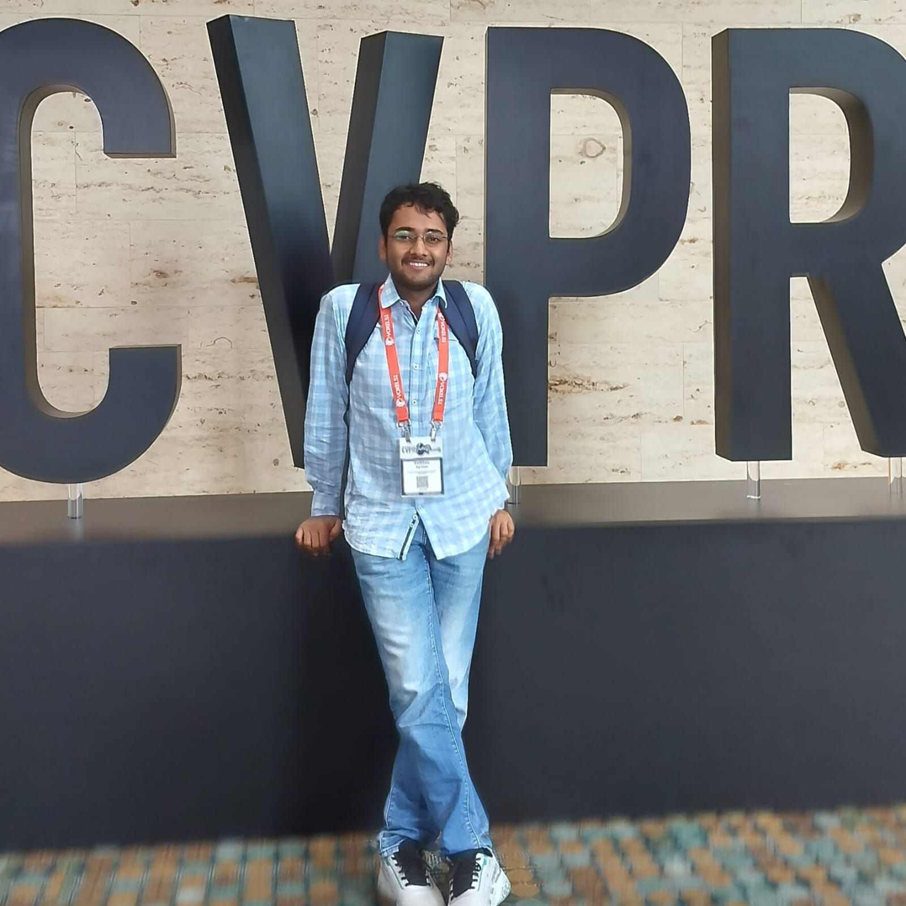
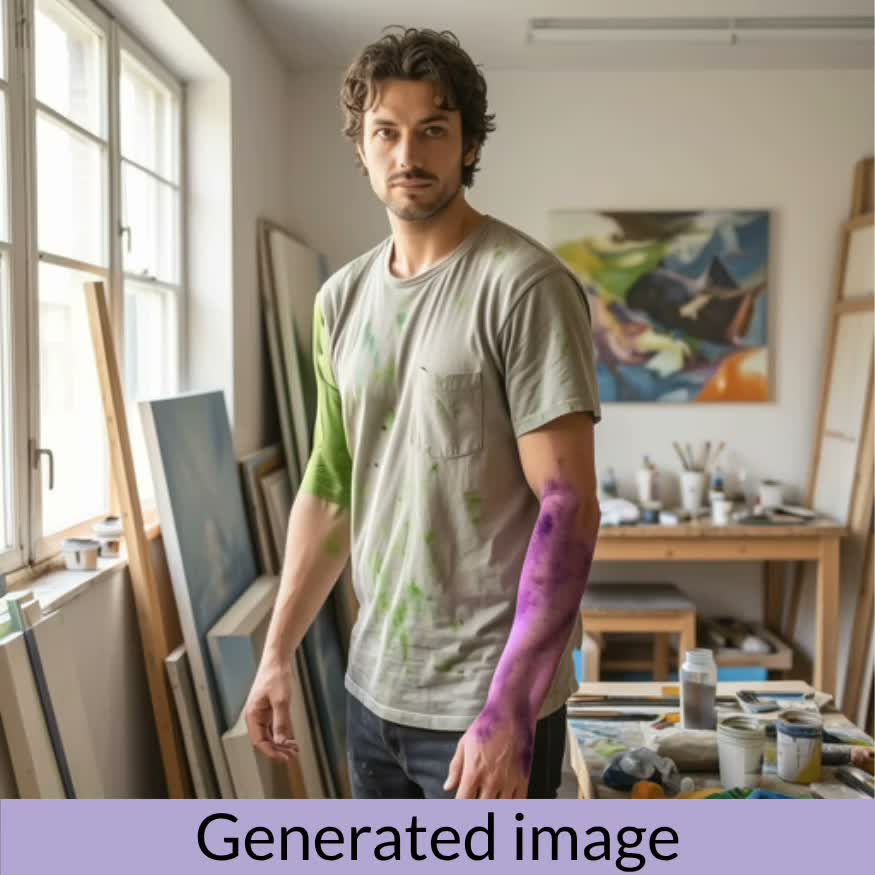
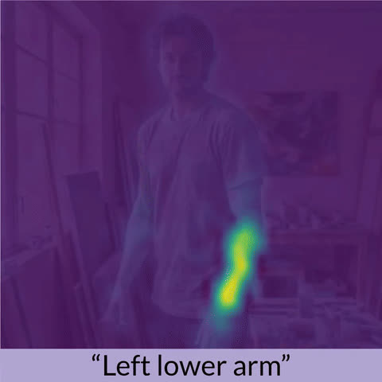
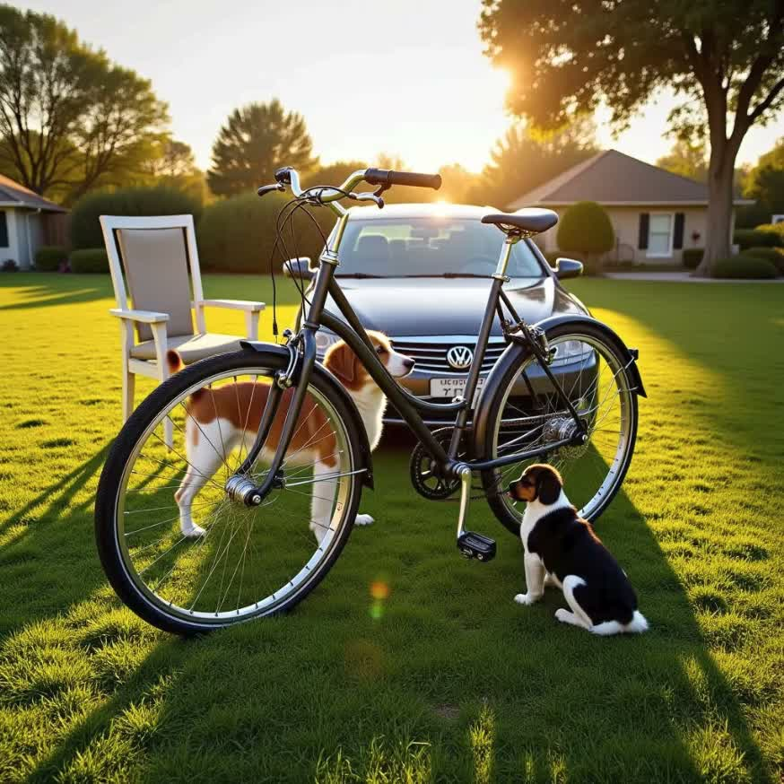
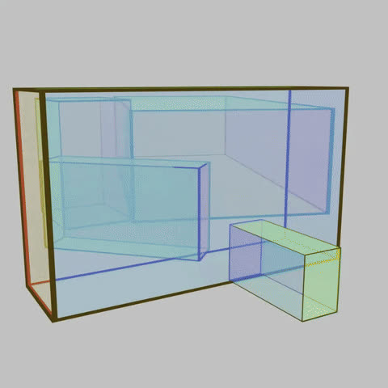
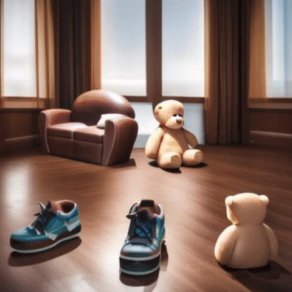
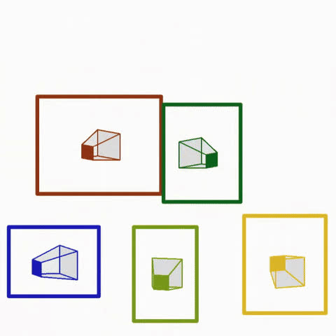
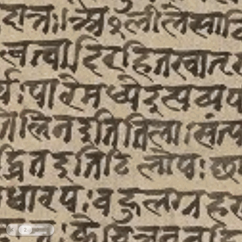
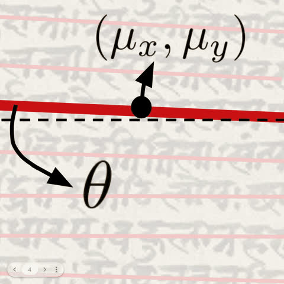

I am a computer vision researcher and an incoming pre-doctoral researcher at CISPA Helmholtz Center, advised by Adam
Kortylewski. I am interested in predictive vision models (e.g., generative models, JEPA, etc.).
Currently, my research focuses on introducing control mechanisms in diffusion models, and leveraging them
for perceptual tasks. My work in these areas has been presented as first-author papers at top-tier CV
conferences.
Previously, I spent beautiful years at CVIT, IIIT Hyderabad , where I
was fortunate to be advised by Ravi Kiran S and co-advised by Venkatesh Babu R (from IISc Bengaluru).
When I am not working, I am usually listening to music or playing the piano. I love receiving emails and
messages! Hence, feel free to reach out to me in case you have any questions or suggestions about research.

* denotes equal contribution, † denotes equal advising.


Finetuning a T2I diffusion model's text encoder for strong attention localization of part-level concepts (e.g., 'left-front leg'); this leads to accurate part-level instance segmentation and generative control.


A 3D bounding box layout consisting of translucent boxes effectively models occluding scene regions; this representation is used to spatially condition a T2I model to enable occlusion aware 3D control.


A continuous textual token is learnt to model generalized object orientation, and multiple such tokens can be combined to enable disentangled multi-object control, using attention based disentanglement.


A line-based parametrization over pixel-wise segmentation enables highly accurate text-line prediction. Further, a context-adaptive patching scheme enables generalization to arbitrary documents.
A multi-modal (visual + depth) re-identification improves SLAM performance by effectively leveraging visual cues.